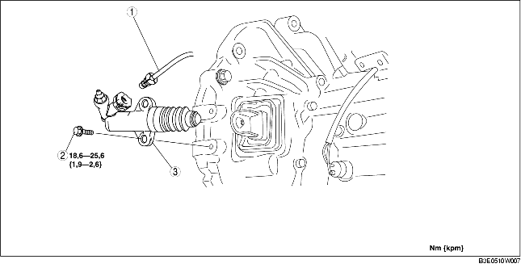

1. Ta bort den undre kåpan.
2. Demontera i den ordning som anges i tabellen.
3. Montera i omvänd ordning mot demonteringen.

.
1. Dra klämman till den position som figuren visar, och dra ut kopplingsrörets kontakt rakt ut för att lossa det.
F35M-R
G35M-R
1. Sätt tillbaka klämman till det läge som visas i figuren.
F35M-R
G35M-R
2. Sätt in kopplingsrörets kontakt rakt.
3. Dra i kopplingsröret för att kontrollera att det inte lossnar, och sätt in det igen helt och hållet.